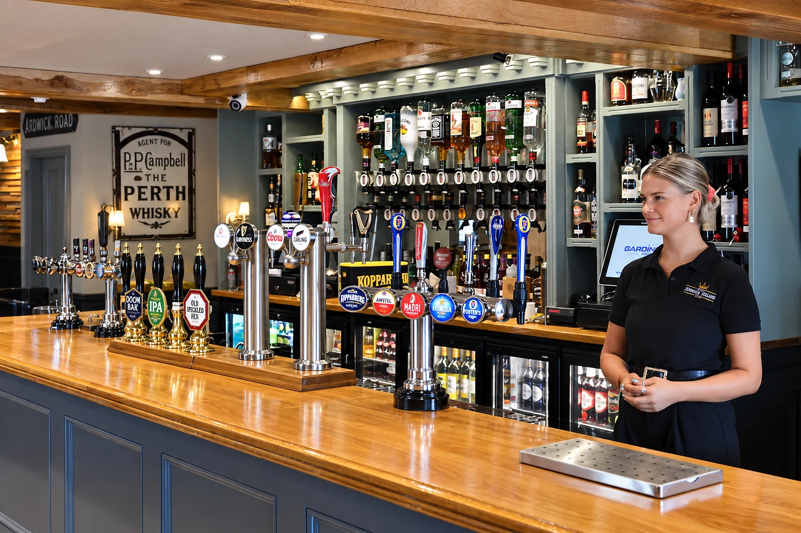
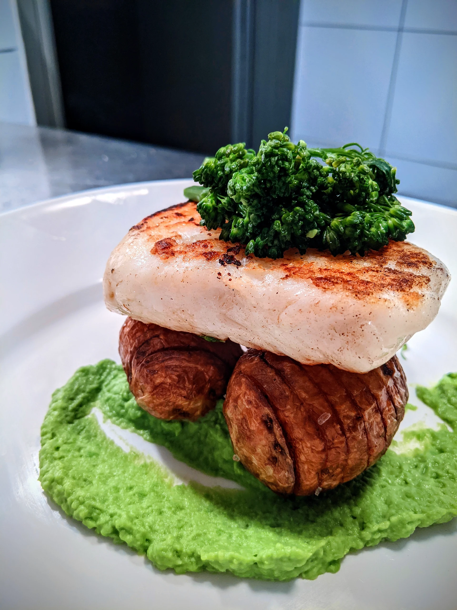
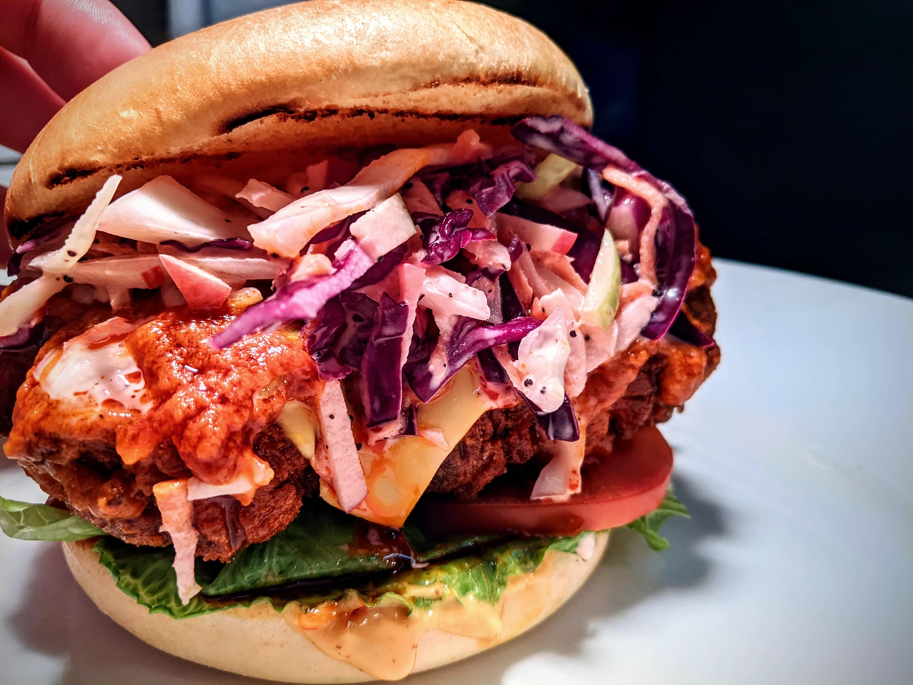
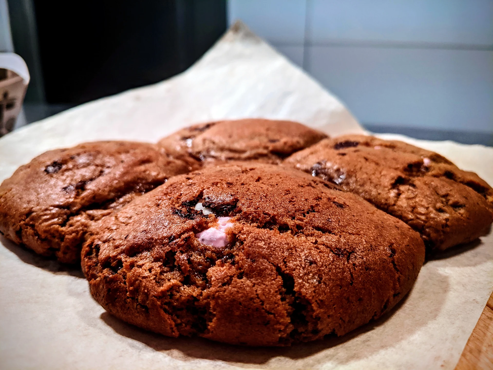
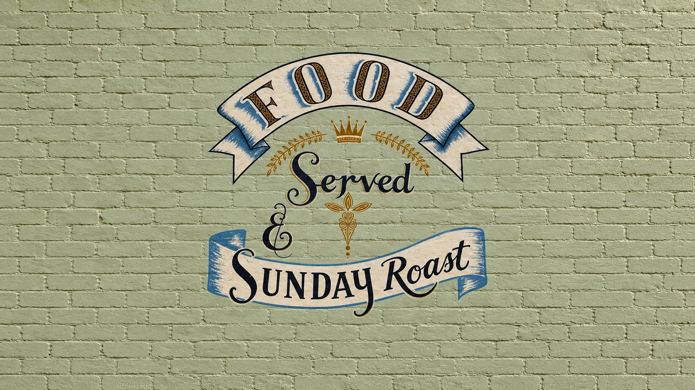
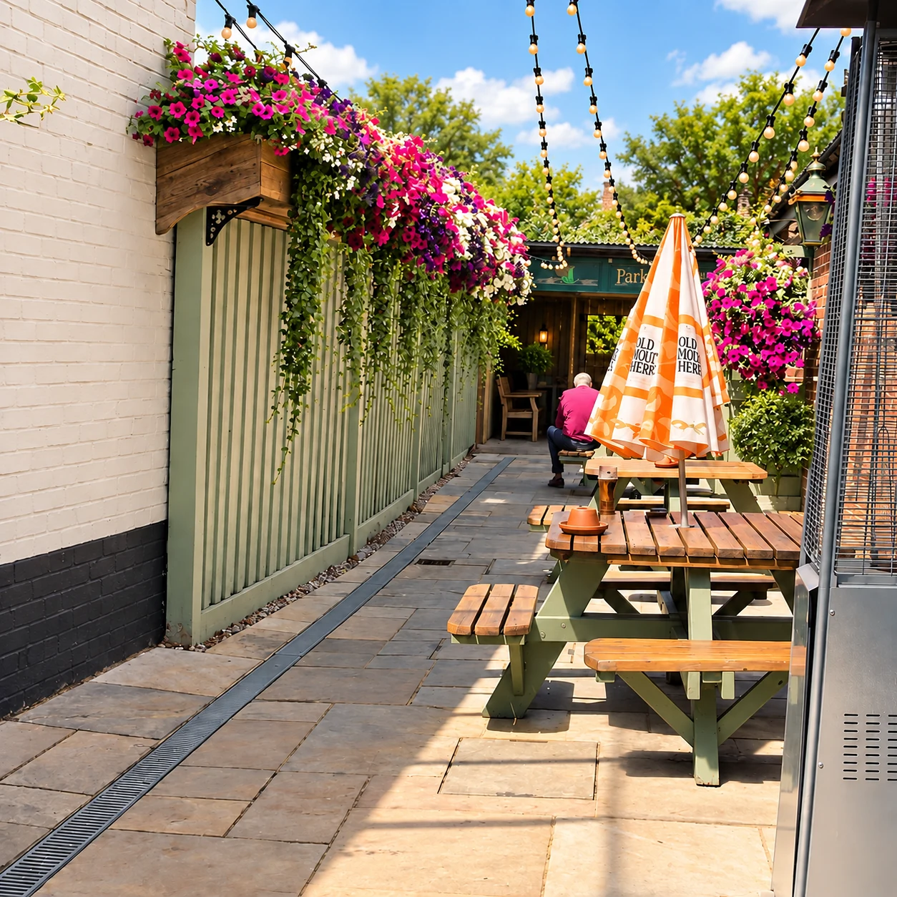
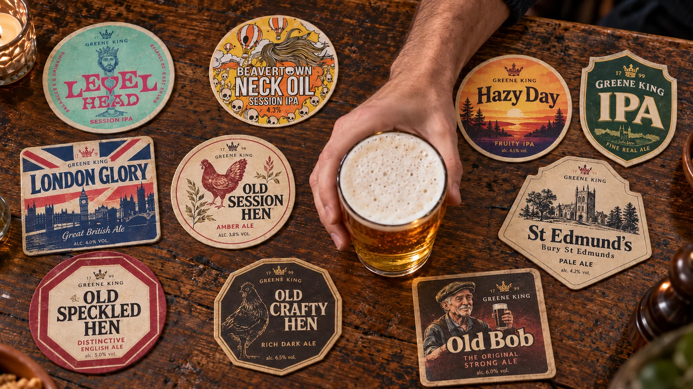

A Billingshurst local, since the 17th century
A proper pub.
A place to linger.
Food, a favourite drink, and good company.
Welcome to The Kings Head Inn.
Food & drink in Billingshurst
At the table.
At the bar. In good company.
From a bite to eat to an afternoon that turns into an evening, there's always a reason to settle in. Our old coaching inn brings food, drinks and a warm welcome together, right on Billingshurst High Street.

good company
01 / From the kitchen
Time for
something good.
Take a seat and find out what the kitchen is cooking. Bring the family, catch up with friends, or make a meal of your visit.
For the current food menu, kitchen opening times and dietary requirements, speak to our team before you visit.
Please tell the team about any allergies before ordering.



02 / From the bar
Your usual.
Or something new.
A pint with friends. A glass over lunch. Something refreshing in the courtyard. The bar is at the heart of it all.
Ask our team for today's drinks selection, or get to know the beers behind the badges below.
Explore the ales
Behind the bar
A little ale knowledge.
Tap a coaster to explore its character and tasting notes. Ask at the bar for what's pouring today.

The best plans start with a visit.
Join us on the High Street. For food enquiries, give the team a call.